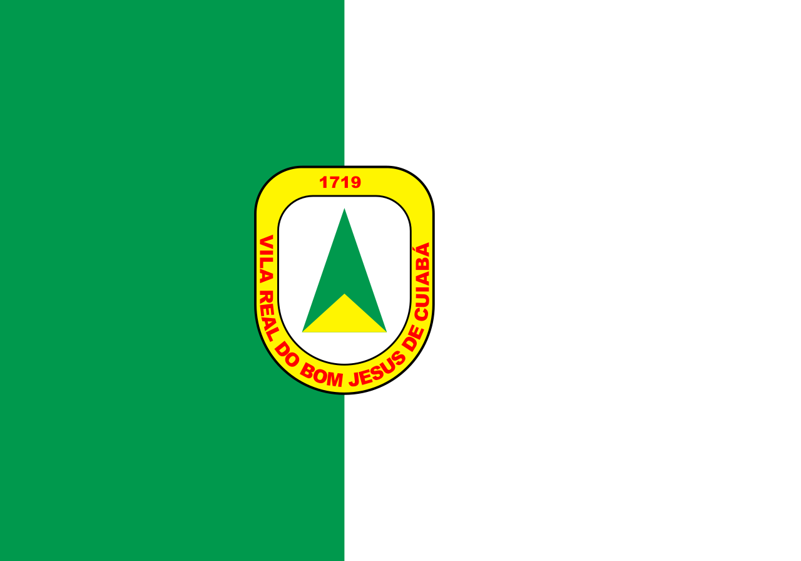
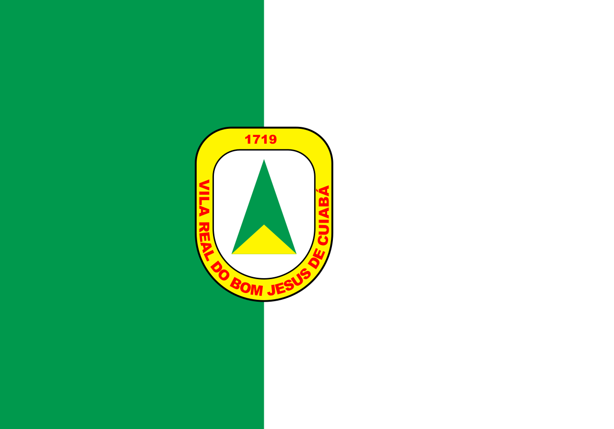

Cuiabá é um município brasileiro, capital do estado de Mato Grosso, Região Centro-Oeste do país. A cidade foi fundada em 1719 por Pascoal Moreira Cabral e descoberta por Miguel Sutil, ambos bandeirantes nascidos na cidade de Sorocaba, no interior do estado de São Paulo. Segundo dados do Instituto Brasileiro de Geografia e Estatística, a população de Cuiabá em 1 de agosto de 2022 era de 650 912 habitantes, enquanto que a população da conurbação era de 950 384; já sua região metropolitana tinha em 2021 uma população estimada de 1 041 307 habitantes. A cidade foi umas das doze sedes da Copa do Mundo FIFA de 2014, representando o Pantanal, por estar situada a cerca de cem quilômetros da região pantaneira.
O município é cercado por três grandes biomas: a Amazônia, o Cerrado e o Pantanal; está próximo da chapada dos Guimarães e ainda é considerado a porta de entrada da floresta amazônica. A vegetação predominante no município é a do cerrado, desde suas variantes mais arbustivas até as matas mais densas à beira dos cursos d'água.
Cuiabá é abastecida pelo rio Cuiabá, afluente do Rio Paraguai e que divide a capital da vizinha Várzea Grande. O município se encontra no divisor de águas das bacias Amazônica e Platina e é banhado também pelos rios Coxipó-Açu, Pari, Mutuca, Claro, Coxipó, Aricá, Manso, São Lourenço, das Mortes, Cumbuca, Suspiro, Coluene, Jangada, Casca, Cachoeirinha e Aricazinho, além de córregos e ribeirões.
A região Centro-Oeste é a segunda maior do país em extensão territorial, e a menos populosa. Composta pelos estados de Goiás (GO), Mato Grosso (MT), Mato Grosso do Sul (MS) e o Distrito Federal (DF), onde está situada a capital do País, Brasília, a região não possui lugares com grandes altitudes. O seu relevo é dividido em três áreas principais: planalto central, planalto meridional e planície do pantanal.
O clima predominante é o tropical semiúmido, com duas estações bem definidas - um inverno seco e um verão muito quente e chuvoso. As temperaturas variam bastante: podem chegar a cerca de 40 °C nos meses mais quentes e 15 °C nos meses mais frios.
É no Centro-Oeste que se encontra a maior planície alagada do mundo: o Pantanal. Além dela, a vegetação que predomina é o Cerrado, que se caracteriza pela presença de árvores baixas, espaçadas com tronco e galhos retorcidos. Já o norte de Mato Grosso é caracterizado pela Floresta Amazônica.

|
Municípios mais populosos da Região Centro-Oeste do Brasil Censo do IBGE (Instituto Brasileiro de Geografia e Estatística) em 2022 |
|||
|---|---|---|---|
| POSIÇÃO | CIDADE | ESTADO | População |
| 1° | Brasília | Distrito Federal | 2 817 381 hab |
| 2° | Goiânia | Goiás | 1 437 366 hab |
| 3° | Campo Grande | Mato Grosso do Sul | 898 100 hab |
| 4° | Cuiabá | Mato Grosso | 650 877 hab |
| 5° | Aparecida de Goiânia | Goiás | 527 796 hab |
Essa página faz parte do trabalho
de sala da turma de Desenvolvimento
de Sistemas M63 - SESI